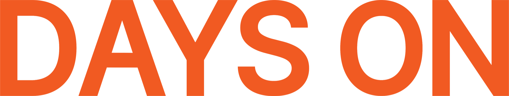

구매 +51.0%
구매매출 +43.7%

×
01
SEPTEMBER MEDIA STRATEGY
9월, 효율을 유지하면서
성장 볼륨을 확대합니다.
기존 제품은 검증된 고효율 영역을 확장하고, 신제품은 신규 수요를 만들며,
쿠팡을 통해 새로운 구매 접점까지 확대합니다.
NAVERMETAGOOGLECOUPANG
×
02
01. AUGUST REVIEW
8월 광고 운영 총평
효율 회복의 방향은 확인되었습니다.
8월 중순 일시적인 트래픽·구매 감소 이후, 4주차부터 주요 매체에서 전환 효율과 매출 볼륨이 함께 회복되는 흐름이 나타났습니다.
CTR +24.2%
구매 CPA -15.6%
클릭 +19.9%
구매 +19.7%
0.60% → 2.25%
구매 CPA 약 49% 절감
9월은 구조를 크게 흔들기보다 8월 후반 검증된 고효율 영역을 확장해 매출 볼륨을 키우는 단계로 전환합니다.
×
03
02. CHANNEL REVIEW
매체별 역할을 다시 명확하게
네이버 쇼핑검색
고효율 상품 확대 / 저효율 CPC 방어
상품별 효율 편차를 기준으로 노출·입찰 차등 운영네이버 파워링크
핵심 검색어 중심 선택과 집중
매출 발생 이력 및 카테고리 의도 기반 키워드 강화브랜드검색
브랜드 수요의 최종 회수
타 매체에서 생성된 관심을 구매로 연결GFA
효율 타겟 중심 볼륨 확대
혜택·프로모션 소재와 상시 소재 분리 운영Meta
신규 수요 + 전환 확대
협력광고는 전환, 외부링크는 수요 생성 중심브랜드 방어 + 리마케팅
직접 ROAS보다 구매 여정 보조 역할에 집중“모든 매체를 같은 ROAS 기준으로 보지 않고, 검색은 전환 회수 / 디스플레이·Meta는 신규 수요 확장으로 역할을 나눕니다.”
×
04
03. SEPTEMBER STRATEGY
효율 방어에서 → 매출 확장으로
01
네이버 SA | 검색 수요 선점
쇼핑검색 고효율 상품 CPC·노출 확대 · 멀티비타민 광고그룹 재편 · 메인 키워드 노출 확대 · 신제품 캠페인 별도 구성
02
GFA | 프로모션과 유입 확대
ROAS/CVR 우수 타겟 예산 확대 · 특가/쿠폰/적립 혜택 소재 집중 · 신제품 신규고객 테스트
03
애드부스트 | 예산 제한 해소
벌크2 일예산 1→2만원 · 알파CD 쇼핑 3→4만원 · 증액 후 효율 유지 시 단계적 추가 확대
핵심: 잘 나오는 광고가 예산 제한 때문에 놓치는 매출을 최소화하고, 성과가 확인된 영역부터 확장합니다.
×
05
04. META & GOOGLE
전환과 수요 생성의 역할 분리
META
협력광고는 전환,
외부링크는 수요 생성
- 성과 우수 소재·타겟 조합 예산 확대
- UGC/시딩 vs 혜택 소구 소재 비교
- 구매자·장바구니 기반 리타겟팅
- 신제품 → 네이버 브랜드스토어 구매 연결
GOOGLE
브랜드 방어와
구매 여정 보조
- 브랜드 키워드 방어
- 경쟁사·카테고리 키워드 테스트
- Meta/GFA 유입자 리마케팅
- 신제품 YouTube/Display 인지도 테스트
×
06
05. NEW PRODUCT LAUNCH
이너뷰티 신제품, 3단계로 견인합니다.
01 관심도 확보
Meta·GFA 티징
핵심 USP/고민 소구
기존 고객·방문자 활용
검색 키워드 사전 조사
→
02 트래픽 집중
협력광고 + GFA + SA 동시 집행
런칭 특가·혜택 강조
브랜드검색 신제품 연계
리타겟팅 반복 노출
→
03 Winning 구조 확보
연령·USP·소재·키워드 분석
CVR/CTR 기준 승자 조합 선별
Winning 조합에 예산 집중
ROAS 중심 최적화 전환
신제품은 처음부터 기존 제품과 동일한 ROAS로 평가하지 않습니다.
초기 2~4주는 충분한 데이터를 확보한 뒤, 성과가 검증된 조합으로 최적화하는 구간으로 설정합니다.
×
07
06. NEW CHANNEL
쿠팡, 새로운 ‘구매 접점’을 제안합니다.
NAVER
검색 · 콘텐츠 · 브랜드 경험
브랜드/상품 관심 → 구매+
COUPANG
카테고리 탐색 · 즉시 구매
구매 의도 고객 → 빠른 전환
1 Best SKU 3~5종 선정2 가격·리뷰·배송·경쟁력 점검3 소규모 광고 Test4 Winning SKU 확대
쿠팡은 9월 메인 전략이 아닌 +α 성장축으로 제안하고, 검증된 SKU부터 단계적으로 확장합니다.
×
08
07. ACTION PLAN
9월 실행 계획
Scale-up
SA 고효율 상품 확대
GFA 효율 타겟 집중
애드부스트 예산 증액
Meta Winning 조합 확대
Search Coverage
멀티비타민 그룹 재편
메인 카테고리 키워드 확대
신제품 키워드 사전 확보
New Product
Meta/GFA 사전 관심 형성
런칭 시 검색+협력광고 집중
2~4주 데이터 후 최적화
Promotion
특가·쿠폰·적립 연계
GFA/Meta 동시 확대
상시/행사 전략 분리
Expansion
쿠팡 Best SKU 테스트
추가 구매접점 확보
검증 후 예산·상품 확대
기존 제품은 검증된 효율을 확장하고,
신제품은 새로운 수요를 생성하며,
쿠팡으로 구매 접점을 확장합니다.
신제품은 새로운 수요를 생성하며,
쿠팡으로 구매 접점을 확장합니다.